Updating Your Site to the Latest Version⌁
Updating your website to the newest version (currently 14.0.2, nicknamed Liquorice) is easy with the update tool linked below.
Requirements⌁
This version of Nightscout will probably not run on anything older than these versions/platforms:
- Android 4
- iOS 9
- Chrome 68
- Edge 17
- Firefox 61
- Safari 10 (macOS 10.12)
- Opera 54
- Internet Explorer: none
If you want to run a Nightscout site on a device that doesn’t meet these minimum requirements, see this guide on how to deploy an older version of Nightscout.
Azure Users⌁
As of 0.12, Nightscout no longer readily supports the free Azure platform. If you really want to keep using Azure, don’t update to this version.
Short background on git⌁
Nigthscout uses Github for storing it's source code. Github is a cloud service, which provides the git versioning system for free to it's users. The essential service provided by git is allowing multiple people to have their own copies of a set of files and services to copy changes over between the different copies.
Back when you originally installeed Nightscout, you've made a fork of Nightscout, which is what git calls you having made your own copy of the set of files that comprised the released version of the Nightscout sources at the time. You've probably also heard the term branch - a branch is also just a copy of the sources made a some point in time. A fork is a set of branches, that is, one or more sets of copies of the Nightscout sources.
Each git branch is named. We develop the software in a branch called dev and when we make a release, we copy the ready to publish files from dev to a branch called master. What you're about to do is, tell git to take the changes we've published to our master copy and update the copy of master you made earlier to have the same changes.
There's one more term you should know: the pull request. A pull request is a request to copy changes from one set of files in git to another set of files. In this case, from the official master copy to your master copy. The instructions below show you how to create this request and then approve it, thus telling git to copy the changes between the files.
Short background on Heroku⌁
Heroku is a service that runs applications in the cloud. And that's just a fancy way of saying they have computers somewhere connected to the Internet and you can run apps on their computers. To get an app running on their computer, it needs to be deployed on their computer. This is another IT term and really just means Heroku is making yet another copy of the files that make up for the Nightscout server app to install and configure it to run it. The instructions below will show you how to tell Heroku to update their copy of Nightscout to match the copy of Nightscout you've made, so they'll run the updated version of the app.
Directions⌁
Ok let's do this!
-
WAIT: Make sure you’re actually signed into your GitHub account — look in the upper right corner of the page to verify. You cannot do this step later. Do it now. 🙂
-
Enter your GitHub username and click the blue button that says Check for updates. (Note: your username is not an email address.)
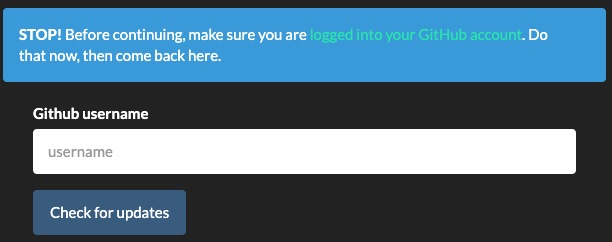
-
If an update is available, the tool will tell you that, provide directions, and give you a button that will take you to GitHub to finish the process.
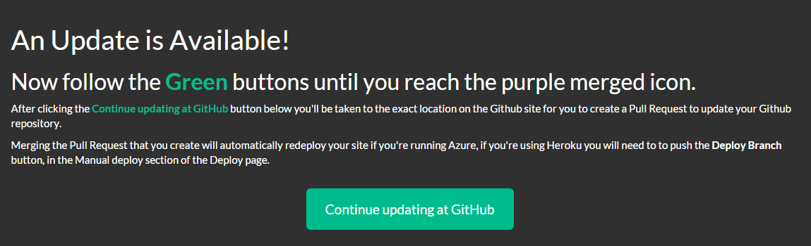
-
Click the Continue updating at GitHub button. Review the directions on the screen that pops up, and continue.
-
Click the green Create pull request button.

-
Give your pull request a name (like “Update” or Liquorice Update” — doesn’t really matter what this is).
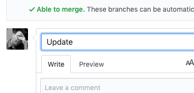
-
Click the green Create pull request button.
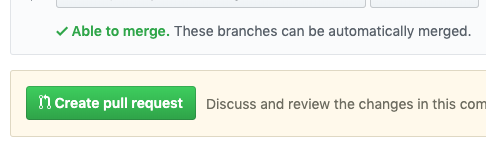
-
Scroll down until you see the green Merge pull request button, and click it.
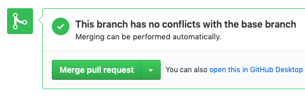
-
Click the green Confirm merge button.
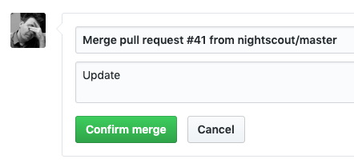
-
Scroll to the top of the page, and you should see a purple icon indicating the merge is complete.
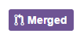
(Note: if you do not see one of the buttons described above, continue to follow the green buttons until you reach the purple “merged” icon. If anything else unexpected happens, post in the Facebook group with details about what you tried and how far you got.)
-
If you’re on Azure, or you’re on Heroku and have Automatic Deploys enabled, you’re done! If you’re on Heroku and don’t have Automatic Deploys on yet, or aren’t sure, run through the following Deployment steps.
Deploying your branch⌁
-
Head to your Heroku dashboard and log in if you need to.
-
Go to the Deploy section.
-
In the middle bit, click on the GitHub button if it isn’t already showing as connected. It will ask you to authorize the connection if you’re doing it for the first time.
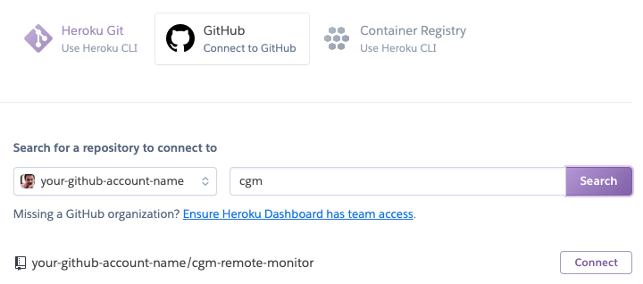
-
Type “cgm” into the repo-name search box, and click Search.
-
Click the Connect button once it finds your cgm-remote-monitor repository. You should now be connected:
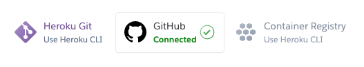
- To let your site finish updating itself as soon as you update your fork in the future with another Pull Request, enable Automatic Deploys here (from the master branch):
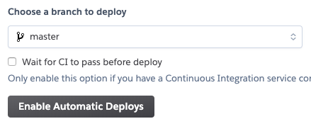
- If your Automatic Deploys were already on, then your site already has the new code from your fork update, and you’re done. If you’ve just turned the Automatic thing on, you’ll need to manually do the first deploy — make sure the branch is on master, and click the Deploy Branch button:
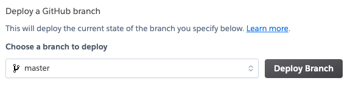
- You’ll see a bunch of build progress notes scroll by — when it says it’s done, you’re done! (And now you don’t have to do this Heroku step next time; just updating your fork with a merged Pull Request will trigger this part automatically.)
To verify that your site has updated, load your website in a browser. If your website is already open, reload it. Click the menu icon in the upper right and look toward the bottom of the settings panel to see the version number.
Please note, it may take a few minutes before your site updates after updating the fork. Be patient!
Some new features, updates, or bug fixes may require that you clear your browser cache before you will see the changes take effect.
If you did not have any errors using the “Update My Version” link above, and your website is not showing that it’s at the current version, see these troubleshooting steps.
Troubleshooting⌁
Uploader App⌁
You're probably using an app of some description to upload data to Nightscout. This is a good time to check if there's an update available to the app as well!
Release Details⌁
To learn more about changes in each Nightscout release, you can find information in the Nightscout releases page.